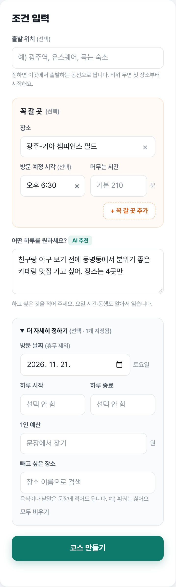

Route-Fit 사용 매뉴얼 광주에 온 하나의 이유를 하루로
2026 마이AI랩 「AI-이음 프로젝트」
팀 센티멘트 (주소연 · 김현민 · 최여름)
팀 센티멘트 (주소연 · 김현민 · 최여름)
접속 주소https://route-fit.duckdns.org
권장 환경PC 크롬 · 엣지
회원가입 · 설치필요 없음
꼭 갈 곳 하나(야구장·공연장 등)와 하고 싶은 것을 문장 한 줄로 적으면, AI가 광주 원도심(동명동·충장로·양림동 일대)의 식당·카페·명소로 나머지 하루를 채워 줍니다. 영업시간·휴무일·이동시간을 지키는 시간표와 지도 경로, 장소마다 추천 이유가 함께 나옵니다.
1 화면 구성
 ①②③
①②③①
조건 입력꼭 갈 곳, 원하는 하루(문장), 날짜·시간 등을 넣는 곳
②
AI 생성 코스인식된 조건, 코스 요약, 시간표와 장소별 추천 이유
③
지도방문 순서대로 번호와 경로 표시. 번호를 누르면 그 장소로 이동
위쪽 코스 만들기 · 실증 통계 · 장소 관리 중 심사·사용은 코스 만들기만 쓰면 됩니다(나머지 둘은 관리자용).
2 코스 만들기

1
출발 위치선택
광주역·숙소 등 출발할 곳을 검색해 고르면 그곳에서 시작하는 동선으로 짭니다. 비우면 첫 장소부터 시작합니다.
광주역·숙소 등 출발할 곳을 검색해 고르면 그곳에서 시작하는 동선으로 짭니다. 비우면 첫 장소부터 시작합니다.
2
꼭 갈 곳선택
이름으로 검색해 고르고 방문 예정 시각(예: 오후 6:30)을 정하면, 그 일정은 그대로 두고 앞뒤 빈 시간을 AI가 채웁니다. + 꼭 갈 곳 추가로 여러 곳도 넣을 수 있습니다. 비우면 AI가 모두 고릅니다.
이름으로 검색해 고르고 방문 예정 시각(예: 오후 6:30)을 정하면, 그 일정은 그대로 두고 앞뒤 빈 시간을 AI가 채웁니다. + 꼭 갈 곳 추가로 여러 곳도 넣을 수 있습니다. 비우면 AI가 모두 고릅니다.
3
어떤 하루를 원하세요?필수
취향·동행·시간을 평소 말하듯 한 문장으로 적습니다. 예) “친구랑 야구 보기 전에 동명동에서 분위기 좋은 카페랑 맛집 가고 싶어. 장소는 4곳만”
취향·동행·시간을 평소 말하듯 한 문장으로 적습니다. 예) “친구랑 야구 보기 전에 동명동에서 분위기 좋은 카페랑 맛집 가고 싶어. 장소는 4곳만”
4
더 자세히 정하기선택
방문 날짜(휴무일 제외), 하루 시작·종료, 1인 예산, 빼고 싶은 장소. 문장으로 말해도 되므로 보통은 비워 둡니다.
방문 날짜(휴무일 제외), 하루 시작·종료, 1인 예산, 빼고 싶은 장소. 문장으로 말해도 되므로 보통은 비워 둡니다.
5
코스 만들기 버튼
5~10초 뒤 가운데에 코스, 오른쪽에 지도 경로가 나옵니다. 마음에 안 들면 문장을 고쳐 다시 누르면 됩니다.
5~10초 뒤 가운데에 코스, 오른쪽에 지도 경로가 나옵니다. 마음에 안 들면 문장을 고쳐 다시 누르면 됩니다.
| 문장에서 알아듣는 말 (예시) | |
|---|---|
| 동행 · 날짜 | 연인이랑, 친구랑, 아이랑 · 토요일에 |
| 시간 | 2시부터, 저녁까지, 오후 6시까지 |
| 장소 수 | 4곳만, 장소 너무 많아, 3~4곳 |
| 하고 싶은 것 | 전시 좀 보고, 서점 투어, 방탈출, 시장 구경 |
| 빼고 싶은 것 | 훠궈는 싫어, 점심은 먹고 갈 거야, 대중교통 타기 싫어 |
| 예산 | 1인 3만 원 정도 |
Route-Fit 사용 매뉴얼 · 팀 센티멘트1 / 2